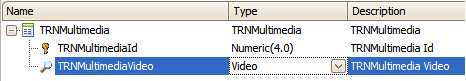
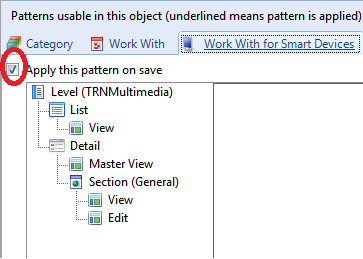
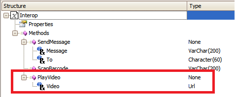
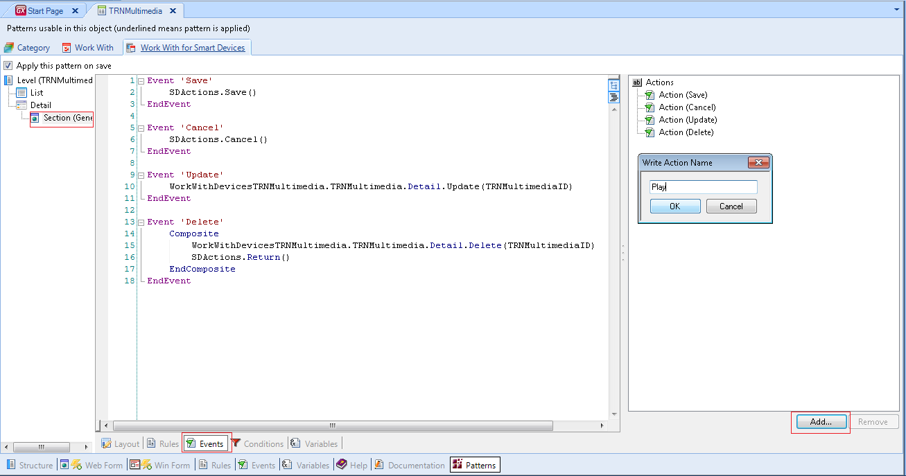
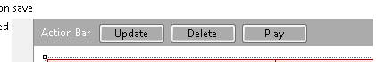
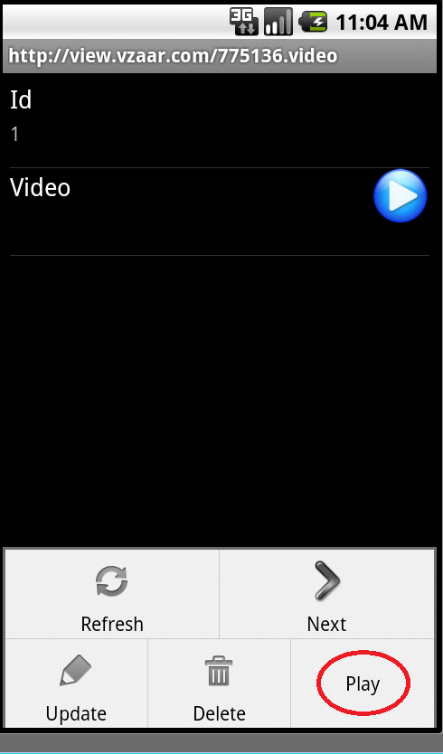
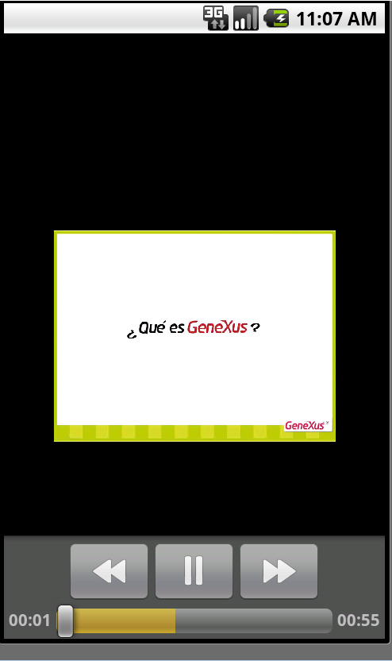

This article will show you how to use this method in a Smart Device Application. The following transaction with the Work With for Smart Devices pattern applied is going to be used.  Important: In this sample, Video is a Domain based on URL Domain. It is NOT the standard Video data type.  The method PlayVideo from Interop expects the following parameter/s:  Let´s define a button on our WWSD which will let us watch a Video. 1. Select the general section node. Add the action:  2. Ater the Action is added to our tree of actions we will have to add the behavior we need. To do so, first double-click on the action. That will take you to the event for that action.
Event 'Play'
Interop.PlayVideo(TRNMultimediaVideo)
EndEvent
Lastly add this action into de Application Bar on the View mode of the Section General.  ExamplesAndroid  
|
| Backlinks | |
| Background Modes property | Interop external object |